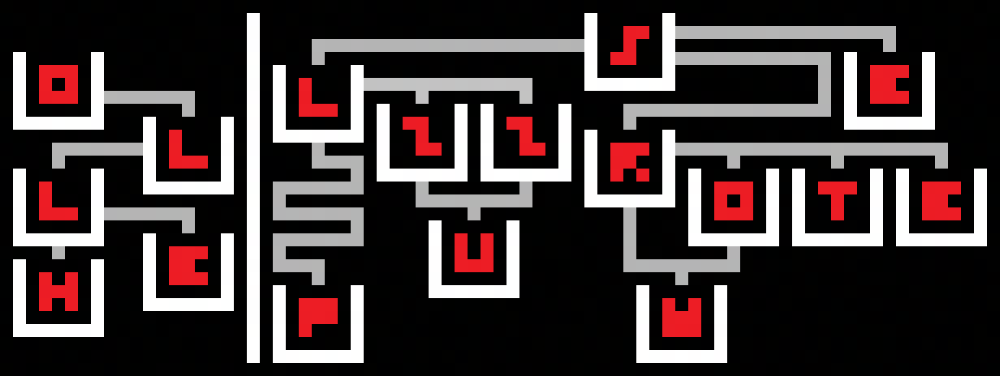
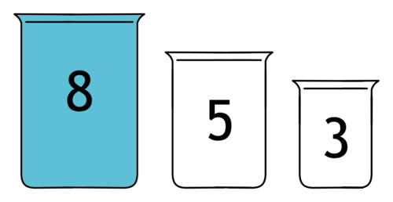
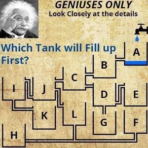

~~~
Minipuzzle 3:
Decanting Problems
~~~
DIFFICULTY:
Low Difficult
TAGS:
Logic, Research, Intimidating
Here is the puzzle:

Your goal is to find an English phrase (2 or more words). Good luck!
SOLUTION (Click to reveal):
This looks quite hard, and there's not much obvious clues in the picture that can help us.
Aside from the puzzle itself, another clue of the puzzle comes from the title 'Decanting Problems'.
A general description of 'Decanting Problems' generally goes like this:
Decanting problems are also called water jug puzzles, are classic logic challenges where you measure an exact amount of liquid using fixed-capacity jugs by pouring between them until a jug is full or empty.

(You can either fill a cup full, empty the cup or pour it to other cups. No eyeballing! You need to make the first and second cup contain 4 unit of water each. Can you solve it?)
Interesting! So this puzzle somehow relates to this 'water jug puzzle'. Not exactly sure how that helps.
In the puzzle, we see cups with letters and pipes-like thing connecting them.
The puzzle looks like it's split in half by the horizontal line, so maybe there's two parts?
(This is the same image, it's just here so you don't have to scroll up)
The first (left) part is... quite obvious. Looking from down to top, you get the word 'Hello'.
Okay, but what exactly is this puzzle supposed to be? And what does the grey lines mean?
Maybe it's water puzzles with pipes? Well given the minimal amount of context, I would assume that this is quite a popular puzzle.
And indeed, on a second thought, this does remind me of another water-related puzzle called 'water filling puzzles'.

'Geniuses only' is quite exaggerated, I guess I'm a genius! Anyways, if you look at this 'water filling puzzle', it looks extremely similar to our puzzle!
Maybe this is the method to solve our puzzle?
Most of the context of these 'water filling puzzles' want to find which 'tank' will be filled first.
But since we need to find a phrase, maybe if we do it repeatedly, we should get a phrase.
Let's solve the second (right) part of the puzzle with this method!
After all of this, you should get the answer like: "HELLO, WOTER PUZZLES".
But honestly, as long as you get the phrase 'WOTER PUZZLES', it counts as correct.